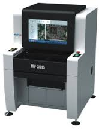

| 產品名稱 | 產品圖片 | 產品介紹 |
| MV3515(離線機) |  |
A：獨創使用DISP（動態圖幅無縫拼接技術）刷新了業內傳統模式，首次實現了全板多幅圖像的即時動態無縫拼接。
採用智能整版無縫拼圖技術，將多個FOV(垂直的角度視野範圍)的圖像拼接成一張完整的圖像，使PCB整板圖像的
即時顯示成為了現實，方便和簡化了程式製作及缺陷警報確認。全圖掃描及全圖拼接展示模式更具細緻的偵測能
力以及元件檢查能力，對於大型的集成電路及連結器（ic / connect）等偵測上，更具備有偵測方面的優勢。 B：可隨時依據需求進行重新 安置區域作業/對人力需求精簡化及彈性區域變換上有絕佳反應能力 C： 元件部分，可利用CAD座標架構模式，通過實時預覽的方式調整整版座標位置，快速的將CAD數據與整版圖象對應 ，使用戶在調整CAD數據和電路板圖像時，更加方便。 D.：可以全條碼作業（BAR CODE一維條碼 / QR CODE 二維條碼 -QR碼），讓回查問題更為方便。 E：由於可實施獲取PCB整版圖象，圖片輸出後可以利用離線編輯程序，在機器以外的電腦進行編成作業，增加方便性。 |
| 待放 | 待放 | 待放 |